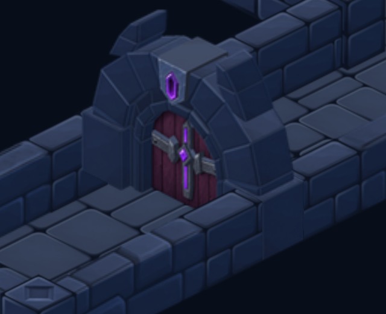
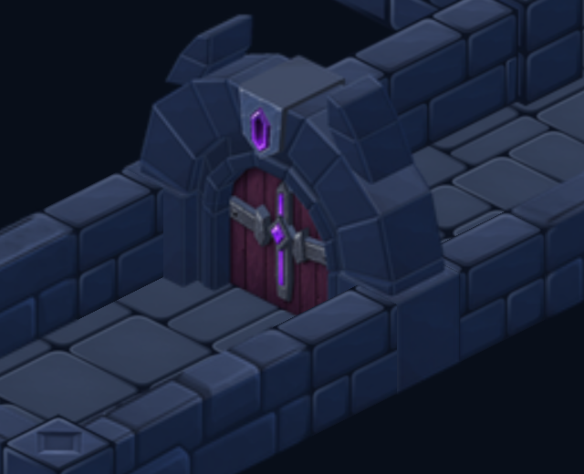
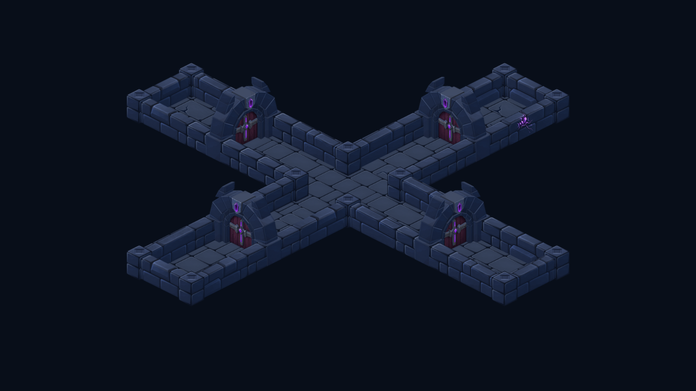

Le mur masque maintenant correctement le montant
Le mur arrière était affiché d'un seul bloc avant la porte. Sa portion située devant le montant devait pourtant le recouvrir. Le raccord est corrigé en séparant les portions du mur pour les afficher dans le bon ordre, avec les mêmes textures et la même géométrie.
Avant — le montant recouvre les briques
Après — les briques passent devant le montant
Captures Godot agrandies. Les quatre orientations ont été inspectées, ainsi que le rendu du jeu avec déplacement statique du héros et suppression/remise des portes.

Aucun nouveau sprite ou atlas. La vérification géométrique du raccord sud passe de 3 622 pixels intérieurs mal superposés à zéro ; les bordures peintes et le filtrage sont exclus de cette mesure. Aucun profil sur téléphone ni raid complet n'a été exécuté.
Vérification de la superposition · États du jeu inspectés